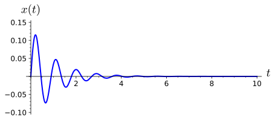

Section 1.3 A Spring-Mass Model
Sometimes it is necessary to consider the second derivative when constructing a mathematical model. Suppose that we have a mass lying on a flat, frictionless surface and that this mass is attached to one end of a spring with the other end of the spring attached to a wall. We denote the spring displacement by \(x\text{.}\) If \(x \gt 0\text{,}\) then the spring is stretched. If \(x \lt 0\text{,}\) the spring is compressed. If \(x = 0\text{,}\) then the spring is in a state of equilibrium (Figure 1.3.1). If we pull on the mass, then the mass will oscillate back and forth across the table.
We can construct a differential equation that models our oscillating mass. First, we must consider the restorative force on the spring. We will make the assumption that this force depends on the displacement of the spring, \(F(x)\text{.}\) Using Taylor’s Theorem from calculus, we can expand \(F\) to obtain
\begin{align*}
F(x) & = F(0) + F'(0) x + \frac{1}{2} F''(0) x^2 + \cdots\\
& = -k x + \frac{1}{2} F''(0) x^2 + \cdots,
\end{align*}
where \(F'(0) = -k\) and \(F(0) = 0\text{.}\) If the displacement is not too large, then \(x^n\) will be small for \(n \geq 2\text{,}\) and we can ignore higher ordered terms. Thus, we can consider the restorative force on the spring to be proportional to displacement of the spring from its equilibrium length,
\begin{equation*}
F = -kx.
\end{equation*}
This equation is known as is Hooke’s law . We can test this law experimentally, and it is reasonably accurate if the displacement of the spring, \(x\text{,}\) is not too large.
By Newton’s second law of motion, the force on the mass must be
\begin{equation*}
F = ma = m \frac{d^2 x}{dt^2} = m x''.
\end{equation*}
Setting the two forces equal, we have a second order differential equation,
\begin{equation*}
mx'' = -kx,
\end{equation*}
which describes our oscillating mass. The spring-mass system is an example of a harmonic oscillator.
Suppose that we have a spring-mass system where \(m =1\) and \(k = 1\text{.}\) If the initial velocity of the spring is one unit per second and the initial position is at the equilibrium point, then we have the following initial value problem,
\begin{align*}
x'' + x & = 0\\
x(0) & = 0\\
x'(0) & = 1.
\end{align*}
Since \(x''(t) = - x(t)\) for both the sine and cosine functions, we might guess that a general solution of our differential equation has the form
\begin{equation*}
x(t) = A \cos t + B \sin t.
\end{equation*}
Noting that
\begin{equation*}
x'(t) = -A \sin t + B \cos t,
\end{equation*}
and using our initial conditions, we can determine that \(A = 0\) and \(B = 1\) or
\begin{equation*}
x(t) = \sin t.
\end{equation*}
The graph of the position of the mass as a function of time is given in Figure 1.3.2.
Now let us add a damping force to our system. For example, we might add a dashpot, a mechanical device that resists motion, to our system. Think of a dashpot as that small cylinder that keeps your screen door from slamming shut. The simplest assumption would be to take the damping force of the dashpot to be proportional to the velocity of the mass, \(x'(t)\text{.}\) Thus, we have will have an additional force,
\begin{equation*}
F = -b x'
\end{equation*}
acting on our mass, where \(b \gt 0\text{.}\) Our new equation for the spring-mass system is
\begin{equation*}
mx'' = -bx' - kx.
\end{equation*}
or
\begin{equation*}
mx'' + bx' + kx = 0,
\end{equation*}
where \(m\text{,}\) \(b\text{,}\) and \(k\) are all positive constants. If we let \(m = 1\text{,}\) \(b = 3\text{,}\) and \(k = 2\text{,}\) then we would have an spring-mass system governed by the equation
\begin{equation*}
x'' + 3x' + 2x = 0.
\end{equation*}
We will learn how to solve equations of the form \(ax'' + bx' + cx = 0\) in
[cross-reference to target(s) "secondorder" missing or not unique], but let us assume that the solution is of the form \(x(t) = e^{rt}\) for now. Then
\begin{align*}
x'' + 3x' + 2x & = r^2 e^{rt} + 3 r e^{rt} + 2 e^{rt}\\
& = e^{rt}(r^2 + 3r +2)\\
& = e^{rt}(r+2)(r+1)\\
& = 0.
\end{align*}
Since \(e^{rt}\) is never zero, it must be the case that \(r = -2\) or \(r = -1\text{,}\) if \(x(t) = e^{rt}\) is to be a solution to our equation. Thus, we might guess that
\begin{equation*}
x(t) = A e^{-t} + B e^{-2t}
\end{equation*}
is a general solution to our equation. If the initial velocity of our mass is one unit per second and the initial position is zero, then we have the initial value problem
\begin{align*}
x'' + 3x' + 2 x & = 0\\
x(0) & = 0\\
x'(0) & = 1.
\end{align*}
Using the fact that \(x'(t) = -A e^{-t} -2 B e^{-2t}\text{,}\) our initial conditions give us the following system of linear equations,
\begin{align*}
A + B & = 0\\
-A -2B & = 1.
\end{align*}
Thus, \(A = 1\) and \(B = -1\text{,}\) and our spring-mass system is modeled by the function
\begin{equation*}
x(t) = e^{-t} - e^{-2t}.
\end{equation*}
Notice that the additional damping negates any oscillation in the system. In this case, we say that the system is over-damped (Figure 1.3.3).
Of course, if we have a very strong spring and only add a small amount of damping to our spring-mass system, the mass would continue to oscillate, but the oscillations would become progressively smaller. In other words, our system would be under-damped . For example, our spring-mass system might be described by the initial value problem
\begin{align*}
x'' + 2x' + 50 x & = 0\\
x(0) & = 0\\
x'(0) & = 1.
\end{align*}
It is easy to verify that
\begin{equation*}
x(t) = \frac{1}{7} e^{-t} \sin 7t
\end{equation*}
is a solution to the initial value problem (Figure 1.3.4).

We will explore harmonic oscillators and second-order differential equations more fully in
[cross-reference to target(s) "secondorder" missing or not unique].